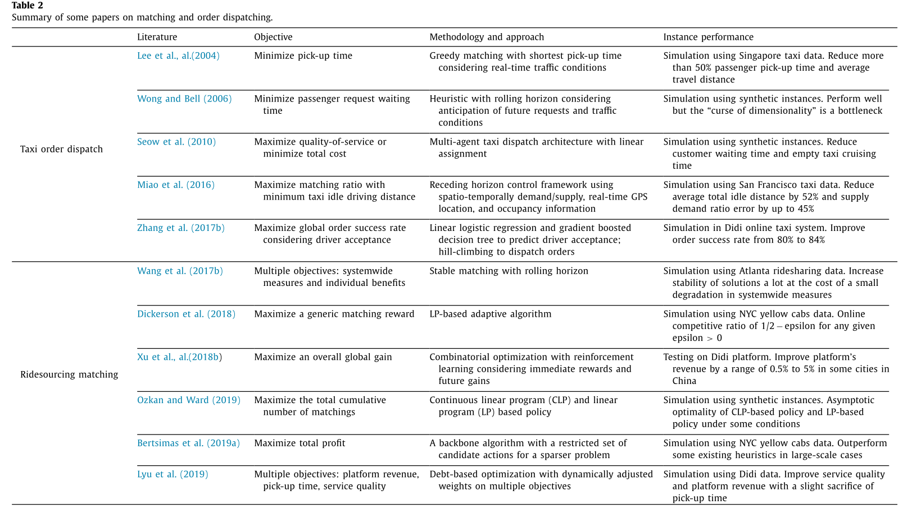

2. Ridesourcing systems: A framework and review
paper: Ridesourcing systems: A framework and review
提出一种描述网约车服务系统的通用框架. 帮助理解内生和外生变量的关系. 思考角度:(1)需求和定价,(2)供应和激励, (3)平台运营, (4)竞争,影响和法规.
Introduction
共享经济,指个体或者小团体可以作为买/卖方进行高效交互的在线平台,或者一种允许共享商品和服务的市场模式. 网约车公司被视为先驱.
之后介绍网约车公司运行模式. 司乘的供需关系, 匹配, 派单, 收费和佣金比例, 评价等.
网约车平台市场模式: 司乘双边市场. 双边市场为终端用户之间的互动提供了一个平台, 并通过向每一方适当收费来调整双方的关系. 数学形式为, 每一次交互过程向 buyer 和 seller 收取和的费用.
- 如果平台上实现的交易量仅取决于总价水平，即对买卖双方对总价的再分配不敏感，则双方互动的市场是单边的。
- 而如果总价不变, 交易量随不同的 和变化, 则市场称为双边的.
在网约车平台, 供需受双边的价格(和)影响很大, 所以该市场是双边的. 此时的交易量就是订单成交量. 该过程对运营策略影响很大, 一般根据平台表现(收入, 订单数量, 市场份额, 利润)或者社会福利(乘客福利, 司机收入等) 调整策略, 比如动态定价或者增量定价.
对比了传统出租车行业的特点. 雇员, 需要执照, 车费由监管机构定或者公司自己定.
而网约车, 监管少, 时间灵活, 乘客主叫. 引起争议的点: 无雇佣关系, 税收灰色区域, 监管不明确, 平台利益与公众利于冲突, 峰时定价高问题.
本文: 提出一种描述网约车服务系统的通用框架, 从四个方面总结网约车系统的重要问题和解决思路.
名词解释:
- ridesourcing, ridehailing, transportation network companies (TNC). 正常网约车, 本文重点关注.
- ridesharing, 顺风车
- ridesplitting, 拼车
2 A general framework
提出一个通用网约车描述框架, 总结了重要的研究问题和相关的方法.
首先讲运营目标. 为了实现这些目标需要指定灵活的运营策略.
讲了司机和乘客在供需两端的特征. 如需求端的乘客的等待时间, 时间价值, 支付意愿等; 供给端司机的油耗顾虑, 收入, 换工作意愿等. 为了捕获这些特征, 平台通常使用对空间进行网格化, 时间进行离散化, 之后预估网格内或时间间隔内的局部供需关系,指定运营策略.
之后讲了网约车系统中, 供需双方的冲突. 比如乘客想要车多,但会降低司机收入; 车少了司机收入高, 乘客体验差, 但是车会变多, 供给增加, 等等. 以及这些因素如何影响平台指定运营策略.
需要研究的问题
需求侧:
- 时空需求估计
- 乘车模式选择
- 静态或动态定价算法
- 促销计划
供给端:
- 短期或长期服务能力的司机供给模型.
- 司机关于工资和激励的供给弹性
- 其他司机行为
- 动态或静态工资激励算法
平台方:
- 接/送 时间预估(estimated time of arrival, ETA)
- 司乘匹配和调度算法
- 拼车相关的费用分担和人员分配
- 空车引导和重定位
- 信息共享和公开
- 评级机制
城市交通系统管理部门:
- 平台竞争，
- 对其他交通服务的影响，
- 社会和环境影响，
- 相关的政府法规和政策。
上述问题设计宏/微观经济学,博弈论, 机器学习, 随机过程等学科.
3 Demand and pricing
目前一些研究关于网约车需求的结论：
- 受过高等教育的年轻人
- 长途商务旅行较多的乘客
- 交通相关手机应用使用频繁的用户
- 环保意识、技术包容性、寻求多样性更加开放的用户
- 社交和休闲旅游、工作旅行
3.1. 时空需求估计
智能手机之前就有很多工作关于交通 origindestination (OD) flow 预估。比如基于动力学、几何分布、最小二乘、准动态估计、线性分配矩阵逼近、扩展准动态估计、基于仿真的优化方法等。 但是 OD 估计不能直接用来预估需求。
时空需求分析对网约车设计和运营很重要。空间提供需求的冷热区域信息、时间给出高峰、非高峰的时间相关模式信息。 最忌使用机器学习方法的预测技术，使用土地利用信息、城市配置等宏观数据、乘客人口统计信息、实时天气信息、实时交通状况等进行预测。
- 一种短期需求的时空估计，假设需求是与乘车服务系统的交通、定价和天气条件相关的变量的函数。使用单一决策树、引导聚合决策树、随机森林、DNN 等逼近该函数
- the fusion convolutional long short-term memory network (FCL-Net)
- deep multi-view spatio-temporal network (DMVST-Net) framework. 该模型由三个视图组成：使用 LSTM 对未来需求值和近时间点之间的相关性进行建模的时间视图，使用 local CNN 对局部空间相关性建模的空间视图，以及共享相似时序模式的区域之间相关性的语义视图。
- deep supply-demand (DeepSD). 使用深度神经网络结构来预测未来几分钟内特定区域的供需差距.
- hexagon-based convolutional neural network (H-CNN). 将城市划分为规则的六边形格子，并提出了一种基于六边形的卷积神经网络（H-CNN）来预测乘车服务中的短期供需缺口。
未来主要研究短期需求/短期时空定价/长期定价策略等方面.
3.2. 乘车模式选择
乘客不仅要选择网约车平台,还要选择特定的服务类型. 比如豪华型/拼车/顺风车等. 也是一种预测问题.
3.3. 静态或动态定价算法
经济学中一些双边市场的定价策略. 一些名词:
- price, 价格, 乘客付的钱
- wage, 工资, 平台给司机的钱
- commission, 佣金, 平台抽取的差价.
将 price/wage/commission 三者的优化问题,称为定价问题. 定价问题具有很强的空间分割和时序模式.
- 排队模型(queueing model), 随着需求增加、容量减少或乘客对等待时间变得更加敏感，平台应使用较低的佣金比率。相反，当司机数量和乘客需求以大致相同的速度增长时，它应该增加佣金比例。
- ....
- 动态定价不一定静态定价提供更多的利润.
- 可以通过不同地区的价格抑制, 可能比奖金激励更有效地让司机离开车辆过多的区域, 或者缓解拥堵. 拼车定价的另一个重要特点是空间价格分割，即在不同区域设置不同的价格，以平衡空间维度的供需.
- 定价问题的另一个特点是需求与价格很相关. 相对于出租车, 消费者对价格变化更敏感.
3.4. 促销计划
常用的促销方式: 忠诚度奖励(用得越多越优惠)/ 推荐奖励/ 不良体验的赔偿/ 优惠票价/ 绑定套餐等
4 Supply and incentives
供给侧会影响交易量/服务水平/价格等.
4.1. 短期或长期服务能力的司机供给模型.
网约车平台一大优势是灵活性. 司机可以有全职工作, 也可以专职开网约车. 但这种灵活性也有问题, 比如农村地区车辆少.
网约车平台需要考虑司机每天是否工作, 如果工作,那何时工作以及工作时间长短, 都决定了供应量. 文献中的许多工作都集中在广泛的边际上，即司机参与平台的决定。
司机在拼车平台上的服务供给因短期和长期行为而异，这可能导致短期激励计划的设计与长期工资合同的设计存在根本差异。这是未来研究的一个重要领域。其他研究方向包括捕捉驾驶员在一天时间内和城市内空间的工作决策的模型，以及相应的时空服务供应模式。乘车平台上的综合决策模型和理论以及全职工作和兼职服务供应的调度也是有趣的研究课题。
4.2. 司机关于工资和激励的供给弹性
小时收入率（即工资率）等因素会影响司机参与的决定以及他们对工作时间的决定，因此评估小时收入率对服务供应的影响至关重要。目前对供给弹性的研究理论:
- 工作时间作为劳动力供应的衡量标准，并将所有司机的平均小时收入作为个人司机收入率的工具变量. 一些司机是非理性的, 在工资低于平时的情况下工作更长时间，而在支付更多费用时工作时间会更短. 收入目标行为（如果存在）往往会在某些小时收入率范围内产生负弹性，并破坏动态定价/工资或其他激励措施的作用。
- 使用工作时间作为劳动力供应的衡量标准，并将所有司机的平均小时收入作为个体司机收入率的工具变量. 发现司机是理性的决策者，通常在收入较高时工作时间更长，这提供了正弹性, 与上述结论相反.
一般来说，收入目标行为可能会破坏新兴共享经济或按需经济市场的好处，在这些市场中，任务通常是动态定价的。 在拼车系统的不同背景下，对短期和长期供应弹性的计量经济学模型、分析和估计很重要； 减轻服务供应弹性模型中的内生性偏差仍需要研究； 需要更多的随机对照试验。 此外，时间范围的影响——例如，每小时、每天和每月的司机决策——对收入目标和供应弹性的影响将是未来研究的有趣和具有挑战性的主题。
4.3. 其他司机行为
了解驾驶员行为对于改进拼车系统供应/服务方面的规划和运营非常重要.
- 空车引导/ 重定位/ 信息共享很重要.
- 平台竞争也会影响司机行为和收入
- 此外，许多研究从高度多样化的角度考察了驾驶员的行为. 绕道/偏见/拒载等司机行为.
4.4. 动态或静态工资激励算法
- 一些研究只是将工资和补偿集中在供应方面.
- 为了解决供需之间的时空失衡，平台通常有各种形式的时空激励计划。一种常用的时空激励是 Uber 的 Boost 和滴滴的 PanGu: 指定时间段/指定热点区域内的所有行程，成倍提升司机收入。
- Boost 计划在整个城市的不同区域运行，而驾驶员可以获得多少 Boost 取决于他们开车的时间和地点。
- 另一种常用的奖励计划是连续奖励或连续旅行奖励。当司机在指定时间内完成指定热点内的多次行程时，他们将获得连续奖励，金额取决于满足特定要求的行程次数。
- 在短短一周的时间内，乘客激励措施比类似的司机激励措施更有效。从长远来看，例如超过三个月，情况正好相反：司机激励比乘客激励更有效。
5 Platform operations 平台运营
5.1. 接/送 时间预估(estimated time of arrival, ETA)
ETA 是很多实时决策任务的基础, 比如订单匹配调度/拼车分配/导航/重定位引导/价格和工资估计等.ETA 受时间相关性/空间相关性/外部因素(天气,信号灯,拥堵)等影响.
- 2004, 支持向量机回归(SVR). SVR 对时间序列分析很有效, 其泛化性和全局最小收敛性都更好.
- 2008, large-scale working application of a Floating-Car Data (FCD) system. 基于 DNN 和模式匹配, 根据 FCD 数据对行驶速度进行在线短期预测.
- 2013, 使用极大似然估计, 从低频 GPS 信号获得车辆轨迹作为观测值, 预测出行时间.
- 2014, 使用当前时段和历史车辆轨迹/地图数据, 组成三维张量数据, 预估不同时间段内不同路段的行驶时间. 使用上下文感知的张量分解方法, 结合地图和轨迹中学到的地理空间/时间/历史上下文信息, 填补缺失值.
- 2017, 利用统计模型预测出行时间分布. 考虑因素: GPS 数据, 每周不同时段本地交通模式的变化情况.
- 2019, 利用网络优化框架预估出行时间. 基于 ML 的技术:
- 2018, 一种端到端预测完整路径时间的框架. 提出一种 Geo-convolution 算子, 通过经典卷积层整合地理信息, 来提取空间相关性; 之后加入循环神经网络提取时间特征.
- 2018, 建模为纯时空回归问题. 滴滴的算法 Learning to Estimate the Travel Time
5.2. 司乘匹配和调度算法
这里需要分单乘客调度和拼车调度两种情况考虑. 本节考虑单乘客匹配.
- Vazifeh et al. (2018). 解决给定出行集合数据(出发点/目的地/开始时间)下的最小车队问题.
- Lee and Savelsbergh (2015). 考虑收益/复杂性/成本三方面因素,调研雇佣小规模专职车队服务无法匹配的乘客的方式. 发现收益与成本取决于三个因素: 服务区域的出行次数/出行时间灵活性/出行方式之间的相似性
司乘匹配调度困难原因:
- 网约车高度动态 / 决策场景的时变随机性和不确定性.
- 当前决策对未来供需影响很大
- 多种短期和长期目标. 短期接送乘客的奖励; 中期服务水平和车队效率; 长期的乘客和司机之间公平性和满意度, 平台的收入/利润/声誉.
- 匹配问题本身规模. 维数爆炸等问题.
匹配问题具有二分性, 因此一般建模为整数规划或者组合优化问题.
- 考虑随机性和不确定性, 使用 stochastic programming and robust optimization 方法
- 考虑当前和未来决策内生性, 使用动态规划 dynamic programming 模型, 获取供需的状态转移概率.
- 时空特征/长短期目标复杂, 使用机器学习方法.
- 针对问题规模大/计算性能要求高的特点, 目前有很多启发式方法.
常用方法总结

实践中, 除了贪婪匹配, 最常用批匹配(batch matching). 平台一般在一定时间间隔内(2-10s)批量进行订单和空车的二部匹配. 包括两个超参数: 匹配间隔; 每个 batch 中允许的最大接客时间/距离(即匹配半径)。
匹配间隔越长, 可调度的车辆和订单越多, 但是等待时间也更长, 导致取消订单; 匹配半径越大, 可调度数量也越多, 但是接客时间更长.
动态匹配问题的 online 算法.
5.3. 拼车相关的费用分担和人员分配
拼车在需求高峰时段的价值最高. 可以减少累计出行距离, 在节约能源和时间等方面有重要意义.
- Santi et al. (2014) 提出一种车辆共享网络(Vehicle-shareability network, 相关博客Nature 最新论文解读：最小车队问题与“乌托邦”交通系统), 把集体收益建模为乘客不方便程度的函数, 并计算最优的共享策略.
- d’Orey et al. (2012) 使用模拟估计拼车系统使得每公里平均占有率提高 48%.
- Korolko et al. (2018)动态定价和动态拼车等待进行联合优化的机制, 决定乘客等待的时间窗口. 可以减少定价易变性, 提升设备占有率/出行吞吐率/welfare
平台还要解决动态司乘订单匹配的问题. 要考虑多目标, 比如等待/延迟时间, 绕路距离, 司机总行程距离和整体占有率, 订单数量, 平台收入和利润. 挑战: 随机性, 当前决策和未来场景的内生性关联, 多个目标的权衡, 大规模系统需求等 解决: 不同的目标假设, 一般使用混合整数线性规划方法形式化问题. 使用启发式方法求解, 比如模拟退火和自适应搜索算法
拼车匹配和订单分配算法总结
| 算法 | 目标 | 方法 | 性能 |
|---|---|---|---|
| Santos and Xavier (2013) | 最大化响应订单数量,最小化乘客费用 | 贪婪随机自适应搜索 | 美国出行数据. 平均每单节省 18.58%费用 |
| Hosni et al. (2014) | 最大化总利润 | 拉格朗日分解和启发式的混合整数规划 | 使用合成数据, 在更短的计算时间内比 CPLEX 更紧地边界 |
| Ma et al. (2015) | 最小化出行距离的增长 | taxi 调度的单边和双边搜索算法 | 北京出行数据. 当请求和出租车数的比例为 6 时, 减少 11%总出行距离, 乘客车费减少 7% |
| Pelzer et al. (2015) | 在有限的绕路条件下, 最小化总里程 | 将网络划分为不同的 partions, 以定义出行匹配的搜索空间 | 新加坡 taxi 数据, 减少 42%出行次数, 节省 23 万千米的日行程, 由于贪婪算法. |
| Jung et al. (2016) | 最小化乘客出行时间, 最大化系统利润 | 混合模拟退火 | 韩国数据, 提高系统效率 |
| Alonso-Mora et al. (2017) | 最小化总延迟 | 带约束优化问题改进的贪婪分配方法 | 纽约 taxi 数据模拟, 只需要 2-3 分钟的等待时间和 2-3 分钟的延迟, 15%容量 10 的或 22.5%容量 4 的出租车可以服务 98%的订单 |
| Qian et al. (2017) | 最大化总节省的出行里程 | 考虑拼车激励, 将整数线性规划转换为一个等价的图问题 | 武汉/深圳/纽约数据, 通过适当的激励, 节省 47%总 taxi 出行里程 |
| Korolko et al. (2018) | 最大化乘客和司机的福利 | 动态定价和动态等待(分单前决定乘客等待和步行)机制 | Uber 数据, 减少价格变动，提高运力利用率、出行吞吐量和福利 |
| Simonetto et al. (2019) | 最小化一般的成本, 比如绕行成本 | Linear programming with fleet reactive rebalancing and insertion cost given by dial-a-ride heuristic | 纽约和墨尔本数据, 与 SOTA 算法性能相似, 但计算速度更快 |
有的平台在拼车前会要求乘客在某个地点汇合. 静态设定下提前选择集合地点, 或者动态设定下实时选择集合地点都值得研究.
- stiglitic 等人(2015)引入一种需要乘客提前汇合的拼车系统
- Aïvodji et al. (2016)根据乘客的隐私成本设置集合地点
其他研究点:
- 给定绕路成本和乘客不便性的前提下, 安排有座位的车接客, 以提高车辆占有率.
- 供需模式和乘客/司机行为, 考虑因素包括乘客歧视态度, 拼车延迟/绕路/可靠性下降等的影响, 建筑环境因素等.
- 政策影响和支持共享出行服务, 也需要进行考虑. 比如基础设施/公共通行权利, 如停车乘车设施/公共交通(HOV)车道/装在区域等.
- 定价和分担费用也很重要. (design price-service menus in Jacob and Roet-Green, 2018).
5.4. 空车引导和重定位
空闲的司机行为差异很大, 有的不动, 有的乱动, 有的向预期目标区域动. 系统层面的调度对于提升效率很重要.
一种思路是为司机提供历史信息和实时需求信息.
- 出租车场景下, Powell et al. (2011)研究一种时空盈利能力 (spatio-temporal profitability , STP) map. 提升盈利水平.
- 网约车场景下, Lu et al. (2018)研究向司机展示高峰价格热图的短期效应. 通过自然实验和双重差分方法, 验证司机查看热图的能力影响其行为和收入.
- Afeche et al. (2018) 使用 steadystate fluid network 模型研究乘客入场控制和司机重定位之间的相互影响. 认为在低需求区域战略性地拒绝请求可能是最优的, 即使司机过剩, 以诱导司机重定位到高需求位置.
另一种是 平台直接引导. Godfrey and Powell (20 02a, 20 02b )针对单周期和多周期出行时间下的动态车队管理问题 ,提出一种自适应动态规划. 其他如下表所示.
| 论文 | 目标 | 方法 | 表现 |
|---|---|---|---|
| Godfrey and Powell (2002a, 2002b ) | 最大化有限 horizon 下的期望利润 | 结合了非线性值函数逼近的自适应动态规划 | 使用确定的随机合成数据. 高效产生高质量解 |
| Braverman et al. (2016) | 最大化系统范围下的效用函数 | 一种排队网络上基于流体的优化问题, 一个有上界的最优寻路策略 | 滴滴数据. 展示了 fluid-based optimal routing 策略的优势 |
| Zhang and Pavone (2016) | 最小化再平衡车辆数量 | 具有乘客损失的封闭 Jackson 网络上的线性规划模型 | 纽约出租车数据. 使用 8000 辆车解决当前需求(60%车辆) |
| Wen et al. (2017) | 考虑再平衡约束下, 最大化服务请求期望数量 | DQN 强化学习方法 | 伦敦数据. 优于本地预测方法，减少 14%的车队规模，几乎没有额外的车辆距离 |
| Gao et al. (2018) | 最大化司机一天总利润 | 整个行驶 sequence 下的 MDP 模型, 使用 Q-learning 算法解决 | 北京出租车数据. 提升收入和效率, 提升乘客打到车的几率 |
| Lin et al. (2018) | 最大化平台总交易额 | 两种 DRL 方法: contextual deep Q-learning and contextual multi-agent actor-critic | 滴滴成都数据, 优于 SOTA 算法 |
| Wallar et al. (2018) | 最大化车辆可服务的请求数量 | 非齐次泊松过程需求预估下的, 离散区域的整数线性规划 | 纽约出租车数据. 用 3000 车服务 99.8%需求, 显著减少等待时间和车内延迟 |
| Iglesias et al. (2018) | 最小化车辆再平衡, 乘客等待和漏接成本 | 使用 LSTM 对用户短期需求进行预估, 进而进行预测与控制 | 滴滴数据. 减少 89.6%乘客平均等待时间 |
| Iglesias et al. (2019) | 最小化道路上服务和平衡车辆的数量 | 一种封闭的多类 BCMP 排队网络. 有限车队的线性规划 | 纽约出租车数据. 基于网络流近似, 渐进接近现有模型性能 |
| Yu et al. (2019b) | 最大化工作期间的长期期望收益 | 利用并行矩阵运算的值迭代算法解决 MDP 问题 | 上海出租车数据. 相比于随机游走和局部热点启发式方法, 提升平均单元 profit(23% and 8.4%)和占有率(23.8% 和 8.3%) |
未来研究方向, 将空车引导与派单/信息共享等决策进行结合, 以及自动驾驶领域.
5.5. 信息共享和公开
平台通过司机和乘客信息连接供需两端. 此处需要考虑两个问题: 1) 需要向司机共享多少乘客信息, 或者向乘客共享多少司机信息.
- Rosenblat and Stark (2016) 描述了不向司机提供终点和费用信息的策略. 减少了目的地的歧视, 但是会降低司机工资.
- Romanyuk (2017). 完全地信息披露会导致效率降低. 因为卖家会过度拒绝请求, 因此需要部分信息披露缓解卖家偏好.
- Chu et al. (2018) 将乘客起止点广播给空车司机, 司机根据自身情况考虑接单或者拒绝. 这会降低司机平均收入. 根据"最短空车服务优先"策略为司机导航更高利润的请求, 而根据"随机寻路"或"最长空车服务优先"策略为司机导航低利润的请求, 可以平衡激励并得到最优的系统效果.
- Yaraghi and Ravi (2017) , 更多的信息披露提升用户之间信任度, 但是会导致种族和性别偏见.
- Lingenbrink and Iyer (2018) 通过有限线性规划, 研究向基于泊松分布的到达时间的延迟敏感用户提供固定价格的服务的,不可观测的单向服务队列中的最优的信息共享. 表明服务者需要策略性地隐藏信息才能激励用户接受服务.
- Romanyuk and Smolin (2019) 考虑实时进入的短期买家和常驻的卖家, 买家和卖家随机配对. 卖家决定是否接收请求. 表明, 如果卖家是同质的, 粗略的信息策略可以提升效率; 如果卖家是异质的, 最优信息披露策略取决于卖家的收益函数.
2) 在必要的信息披露下, 如何尽可能保护隐私.
- Rigby et al. (2013) 讨论了一种动态的/直觉的接口技术, 称为"launch pad", 和一个中心化的系统结构. 简化订单匹配并保护位置隐私.
- Aïvodji et al. (2016) 开发了一种隐私保护的上车点计算方法, 每个用户都能控制自己的位置数据. 提出了一个去中心化的架构，提供强大的安全和隐私保障，并集成了隐私增强技术和多模式最短路径算法，为司机和乘客私下计算彼此感兴趣的上车点.
- Hallgren et al. (2017) 提出一种 secure multi-party 计算技术, 基于终点近似或轨迹近似, 进行终点和轨迹匹配, 建立正式的隐私保护, 研究不同乘车模式如何影响隐私/效用/不同方法的性能.
5.6. 评价机制
司机乘客互有数值评价(评级). 是一种在线反馈机制.
好处:
- 实时反馈评价, 提供更多关于服务质量的信息, 监管方面的好处.
- 乘客对司机的评价和监督权重加大
- 司乘双向评价机制好于乘客单向评价司机的机制.
存在的问题: 夸大/不公平/偏见
- 评级机制会随着时间推移恶性循环, 乘客对司机评级越高, 越拉高平均评级; 或者越低越拉底平均评级. 最终评价效果变差.
- 乘客如果被取消过订单, 会倾向于把负面评价发泄给下一个接单的司机, 导致司机被不公平对待.
- 如果用户发现平台的评价机制不合理, 会导致不信任, 并通过过度行为纠正不合理的评价.
- Stemler (2017)讨论了, 评价机制利用了群体偏见还是群体智慧?
- 乘客对平台的评价也会影响司机的就业抉择.
- 司乘关系也会影响评级, 比如司乘年龄差距越小, 评级可能越高.
6 Competition, impacts, and regulations
竞争
竞争主要考虑平台从单家变为多家竞争时乘客空乘/司机占用率等的影响.
网约车对公共交通/传统出租车行业的影响. 优势: (i) 平台的高效匹配技术， (ii) 平台规模较大，(iii) 出租车法规效率低下，(iv) 平台灵活的劳动力模式和激增的定价。
网约车对传统出租车行业影响巨大. （i）拼车平台导致出租车客流量显着损失； (ii) 在高峰期和人口密度高的地区，出租车与拼车服务更有效地竞争； (iii) 网约车平台有助提升的士产能利用率； (iv) 拼车平台加剧了城市出租车的拥堵，但影响相对温和。
社会和环境
对汽车保有量、能源和燃料消耗、空气污染物排放和交通拥堵的影响.
好处: 拼车对减少空气污染和交通拥堵有好处, 社会监管的好处, 司机对乘客的歧视问题, 就业问题, 乘客安全问题
网约车也会造成拥堵和污染, 隐私问题
法规
出租车的价格/区域/营业执照之类的容易受到监管. 网约车的价格/工作时间不受监管, 导致平台不公平竞争, 隐私/安全/责任划分问题.
2015 年一篇论文预测未来城市对网约车平台的政策: 城市将 (i) 补贴共享公司，以激励它们进入或扩展某些服务； (ii) 利用共享公司进行经济再分配； (iii) 聘请共享公司作为承包商提供城市服务。
政策不应该用传统出租车的法规管理网约车, 政府可能会放宽传统出租车行业的限制, 加强对司机和乘客的保护. 反垄断和共谋
司机的法律角色. 司机是独立承包商、自由职业者还是平台雇员?
司机的角色不明确导致税收和执法方面的困境.
另一大问题就是安全性. 乘车平台上的无现金交易和自我识别的乘客大大减轻了与传统出租车相关的最严重风险之一：暴力犯罪. 虽然网约车的暴力犯罪比出租车少, 但是安全问题不容忽视
7. Summary
网约车平台连接供需两端市场.
网约车市场是双边市场, 司乘双方对费用和收入都很敏感. 需求方面, 乘客具有时空特征, 考虑费用/服务质量/其他出行方式权衡等因素 供应方面, 司机作为自由职业者, 考虑收入/工作时间/其他工作方式等因素.
拼车系统的目标多样化, 根据具体的发展阶段、市场条件、平台竞争和政府法规而变化. 一些通用的目标包括, 在时空方面平衡供需, 最大化平台收益, 最大化市场占用率/份额/社会福利.
利益相关者: 乘客/用户、司机/服务提供商、平台、政策制定者和公众. 平台需要从不同角度制定多种运营策略.
本文提出一种描述网约车系统的通用框架, 表明利益相关者/代理/属性之间的内在关系. 总体而言, 服务质量/司机收入/乘客需求/司机供应之间具有很强的内生性关系, 且关系高度动态. 因此是关键因素.
本文从多种学科的角度, 从需求和定价、供应和激励、平台运营以及竞争、影响和法规等方面总结问题与方法. 需求端重要问题包括:
- 时空需求估计
- 乘客对其他出行方式的选择模式
- 动态或静态定价策略
- 其他乘客促销
供应端问题包括:
- 描述平台长期和短期服务能力的司机供应模型
- 司机供应关于收入和激励的弹性
- 其他司机行为
- 静态或动态收入和激励算法
平台方
- estimated time of arrival (ETA) , 接客时间和行程时间预估
- 订单匹配和调度策略
- 拼车订单分配算法
- 空车引导和重定位
- 信息共享和披露
- 评级机制
将网约车作为大的城市交通的一部分, 需要考虑;
- 平台竞争
- 对其他交通服务的影响
- 社会和环境影响
- 相关的政策法规
之后描述了一下对未来的积极意义.